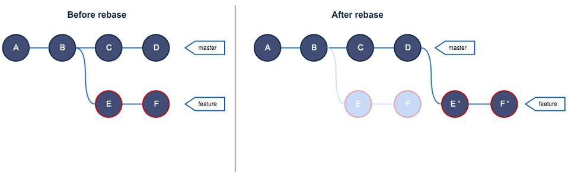

Git Tutorial - 8. Rebase
1. Home
2. Git Installation (windows)
3. Repository Initialization
4. Repository Contents Post-Init
5. First Commit
6. Repository Contents Post-Commit
7. Branches
8. Rebase
9. Merge
10. Synching
Cheat Sheet - Command Line Interface
Cheat Sheet - Git
Cheat Sheet - Git#2
Cheat Sheet - Vi Text Editor
Git Rebase
- Team of developers are working on a project.
- Every team member has a feature to implement.
- Developers create a local branch named after the feature they are developing on.
- Developers work on their features accumulating lots of commits locally.
- Developers reach their respective development milestones which require sharing them in the remote central repository.
- Developers uploads their work, hundreds of commits pollute the history into an unreadable mess.
- Developers revert the changes made and learn about a git command rebase.
- While the main function of git rebase is to take a branch and stick it on top of another branch, git rebase also enables rewriting of commit history.
- It is the rewriting ability of git rebase that solves the problem with convoluted commit chains when features get finished or reach a certain milestone.
- By calling git rebase -i <TargetBranch>, git takes the currently checked out branch and rebases it on the topmost commit of the targeted branch.
- But before the actual rebase, the interactive mode forces user to tell git what should be done on the commits on this branch.

- With git rebase user usually wants to:
- drop some commits
- keep some commits
- reword the commit message of some commits
- melt two or more commits together as one commit with single commit message.
- The goal with the interactive mode is to make the commit chain (the commit history) to look as if all the milestones were nailed the first time they were written.
- In case a commit is not "milestone worthy", but still an important commit, user can make a tag on the commit for future reference.
- The video below demonstrates how rebase works for squashing commits and rebasing a branch.
- Rebase Summary:
- Developing on a piece of software will take a number of commits, most of those commits are of little interest.
- Rewriting the commit history with git rebase in interactive mode allows choosing the commits the user wants to keep, drop and squash to previous ones.
- This achieves a clean commits history.
- The desirable thing to do is to rewrite commit history to look as if it nailed the meaningful development milestones at first try.
- Use of rebase is unsuited for scenarios where several developers are working on the same branch.